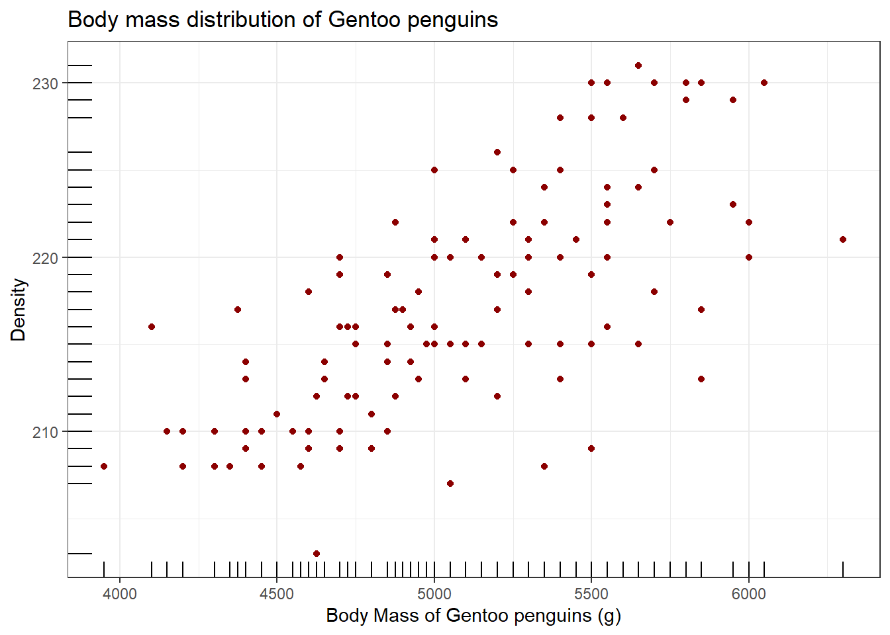

Code
install.packages("ggplot2")
library(ggplot2)Learn how to plot different types of graphs using the ggplot2 package.
This series of chapters are focused on people who have a basic understanding of R programming. You are expected to know how the basic syntaxes of R language work like how to assign values, how to load your data, the different operations of R, and so on. If you just started out on your R journey then this chapter and the rest will become a roadblock for you. But fear not, there are some amazing websites that teach you the very basics of R, and that too for free! For an interactive way of learning, I recommend DataCamp. It is an online platform for learning programming languages. They have both paid and free classes. Luckily for us, they are providing the introductory classes on R programming for free. This would be a great way to start your R journey. After you completed the course on data camp you can come back to this blog and you will find it very easy to comprehend and learn the various chapters that are available here. Coming from my own experience, it would be really helpful if you have your own data to work with. Rather than religiously following the steps in these chapters, I would recommend you have a goal in your mind before diving into the chapters. The goal should be to try incorporating the things you learned here into your own data. That would be the best way to learn anything in R. Hope you have a great time learning!
In this chapter we will be plotting different types of graphs using a package called ggplot2 in R. The ggplot2 package is based on ‘grammar of graphics plot’ which provides a systematic way of doing data visualizations in R. With a few lines of code you can plot a simple graph and by adding more layers onto it you can create complex yet elegant data visualizations.
A ggplot2 graph is made up of three components.
geom() command code. For e.g. using the geom_boxplot() command, you can plot a box plot with your data. Likewise, there are many types of geometry that you can plot using the ggplot2 package.aes() for adding different types of aesthetics to the plot. We will learn more about aes() in Chapter 2.This tutorial is primarily focused on students who are beginners in R programming and wants to quickly plot their data without much of a hassle. So without further ado let’s plot some graphs!
First, we need to install the ggplot2 package in R as it does not come in the standard distribution of R.
install.packages() and to load packages we use the command library(). Therefore to install and load ggplot2 package we use the following lines of command.install.packages("ggplot2")
library(ggplot2)All right we have the ggplot2 package loaded, now we just need some data to plot. Most R programming tutorials use the iris dataset as an example. But this tutorial won’t be like most tutorials. So let me introduce you to some lovely penguins from Palmer Station in Antarctica!
For this tutorial, we will be installing the palmerpenguins package which showcases body measurements taken from three different species of penguins from Antarctica. This package was made possible by the efforts of Dr. Allison Horst. The penguin data was collected and made available by Dr. Kristen Gorman and the Palmer Station, Antarctica LTER.
install.packages("palmerpenguins")
library(palmerpenguins)Now there are two datasets in this package. We will be using the penguins dataset which is a simplified version of the raw data present in the package.
head() to display the first few values of penguins dataset to see how it looks likelibrary(palmerpenguins)
knitr::kable(head(penguins))| species | island | bill_length_mm | bill_depth_mm | flipper_length_mm | body_mass_g | sex | year |
|---|---|---|---|---|---|---|---|
| Adelie | Torgersen | 39.1 | 18.7 | 181 | 3750 | male | 2007 |
| Adelie | Torgersen | 39.5 | 17.4 | 186 | 3800 | female | 2007 |
| Adelie | Torgersen | 40.3 | 18.0 | 195 | 3250 | female | 2007 |
| Adelie | Torgersen | NA | NA | NA | NA | NA | 2007 |
| Adelie | Torgersen | 36.7 | 19.3 | 193 | 3450 | female | 2007 |
| Adelie | Torgersen | 39.3 | 20.6 | 190 | 3650 | male | 2007 |
We can see that are 8 columns in the dataset representing different values. Now let us try plotting some graphs with this data.
So we will try to plot a simple bar graph first. Bar graphs are used to represent categorical data where the height of the rectangular bar represents the value for that category. We will plot a bargraph representing frequency data for all three species of penguins.
geom_bar() command to plot the bar graph. Let us also use the command theme_bw() for a nice looking theme.Histograms are similar to bar graphs visually. But histograms are used to represent continuous data. Also the all the rectangular bars will have the same bin size or width.
geom_histogram().Warning: Removed 2 rows containing non-finite values (stat_bin).
The warning message indicates that for two rows in the dataset, they have NA values or that they did not have any values present. This is true for real-life cases, as during data collection sometimes you will be unable to collect data due to various reasons. So this is perfectly fine.
Line graph simply joins together data points to show overall distribution.
geom_line() for plotting a line graph.The scatter plot simply denotes the data points in the dataset.
geom_point() to plot a scatter plot.Density plots are similar to histograms but show it shows the overall distribution of the data in a finer way. This way we will get a bell-shaped curve if our data follows a normal distribution.
geom_density() to a density plot.
Since we plotted for all three species the graph looks clustered. Let us try plotting the same graph for only gentoo penguins. We will use the dplyr package to filter() data for gentoo penguins alone. The dplyr package comes in-built with R so just load the dplyr package using the command library().
library(ggplot2)
library(palmerpenguins)
library(dplyr)
penguins_gentoo <- penguins %>% filter(species == "Gentoo")
ggplot(data = penguins_gentoo, aes(x = body_mass_g)) +
xlab("Body Mass of Gentoo penguins (g)") + ylab("Density") +
ggtitle("Body mass distribution of Gentoo penguins") +
geom_density(fill = "red") + theme_bw()
Dot-plot is similar to a density plot but it shows discretely each data point in the distribution.
geom_dotplot() to plot a dot-plot.
Rug-plot is a simple way to visualize the distribution of data along the axis lines. It is often used in conjunction with other graphical representations.
geom_rug() to plot a rug-plot.library(ggplot2)
library(palmerpenguins)
library(dplyr)
penguins_gentoo <- penguins %>% filter(species == "Gentoo")
ggplot(data = penguins_gentoo, aes(x = body_mass_g, y = flipper_length_mm)) +
xlab("Body Mass of Gentoo penguins (g)") + ylab("Density") +
ggtitle("Body mass distribution of Gentoo penguins") +
geom_point(colour = "darkred") + geom_rug() + theme_bw()
Box-plot is one of the better ways of showing data via quartiles. You can learn more about box plots here.
geom_boxplot() to plot a box-plot.Violin plot can be considered as the best of both a box-plot and a density plot. It shows the quartile values, like in a box-plot and also shows the distribution of the data, like in a density plot.
geom_violin() in conjunction with geom_boxplot() to plot a violin plot.library(ggplot2)
library(palmerpenguins)
ggplot(data = penguins, aes(x = species, y = body_mass_g, fill = species)) +
xlab("Species") + ylab("Body mass (g)") +
ggtitle("Body mass in three diferent species of penguins") +
geom_violin(aes(colour = species), trim = TRUE) + geom_boxplot(width = 0.2) +
theme_bw()
ggsave() to save the graph locally. In the code below, ‘my_graph’ is the ggplot element containing your graph. The plot will be saved in your working directory.library(ggplot2)
library(palmerpenguins)
my_graph <- ggplot(data = penguins, aes(x = species, y = body_mass_g,
fill = species)) +
xlab("Species") + ylab("Body mass (g)") +
ggtitle("Body mass in three diferent species of penguins") +
geom_violin(aes(colour = species), trim = TRUE) +
geom_boxplot(width = 0.2) +
theme_bw()
#to save the plot
ggsave(my_graph, filename = "your_graph_name.png", width = 20, height = 20,
units = "cm")I hope this tutorial helped you to get familiarized with the ggplot2 commands. There are many more different types of graphs that you can plot using ggplot2. The tutorial only showed some of the commonly used ones. The best way to learn R is through actually doing it yourself. Try to recreate the examples given in this tutorial by yourself and then try what you learned with the different datasets available in R. Have a good day!
H. Wickham. ggplot2: Elegant Graphics for Data Analysis. Springer-Verlag New York, 2016. Read more about ggplot2 here. You can also look at the cheat sheet for all the syntax used in ggplot2. Also check this out.
Horst AM, Hill AP, Gorman KB (2020). palmerpenguins: Palmer Archipelago (Antarctica) penguin data. R package version 0.1.0. https://allisonhorst.github.io/palmerpenguins/. doi: 10.5281/zenodo.3960218.
[1] "2022-07-18 12:36:48 IST"@online{johnson2021,
author = {Jewel Johnson},
title = {Chapter 1: {Data} Visualization Using Ggplot2},
date = {2021-12-02},
url = {https://jeweljohnsonj.github.io/one-carat-blog//articles/data_viz/project1.html},
langid = {en}
}